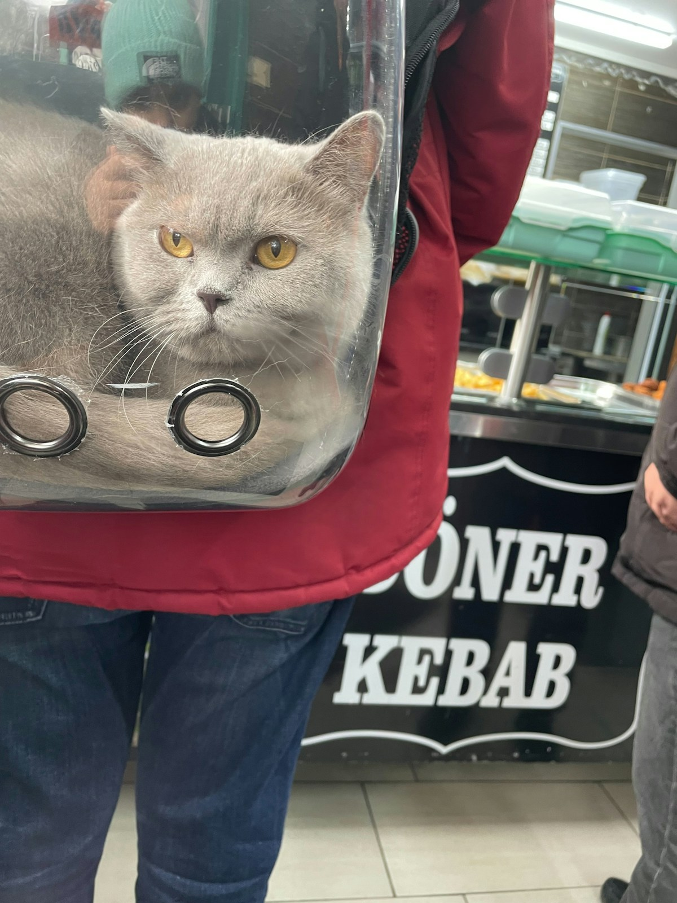
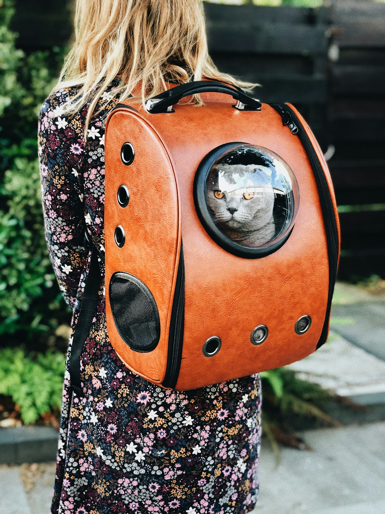
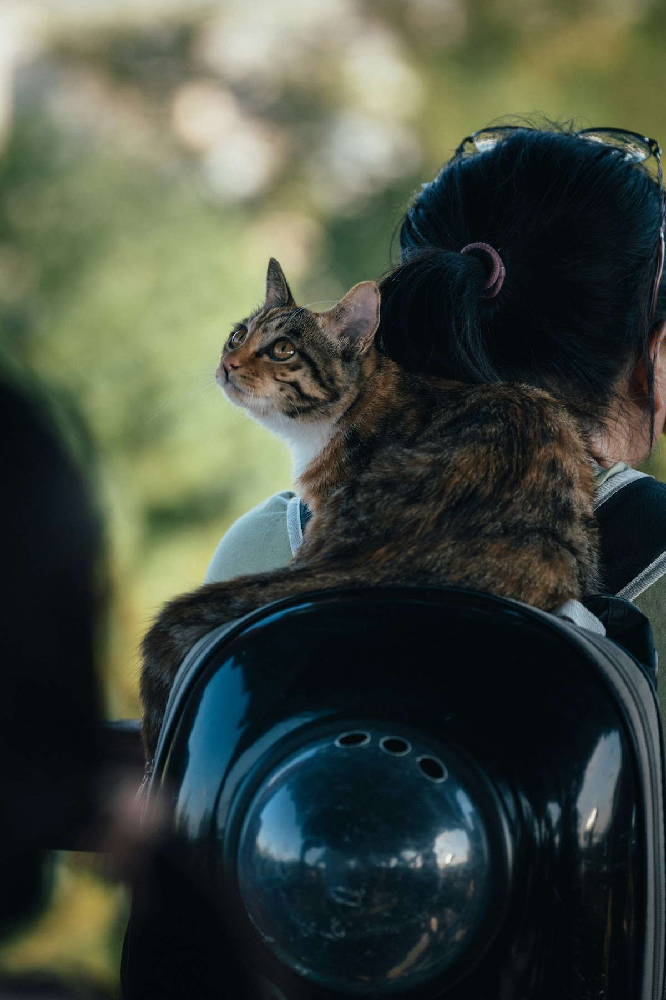

Kmart vs Petbarn vs Purpose-Built: Where I'd Actually Buy a Cat Backpack
Short answer: start at the big-box stores if you must, but with Mochi the middle band of sixty to a hundred and twenty dollars beats a Kmart impulse buy. In short, Petbarn gives you a fitting service and easy returns, a purpose-built Aussie brand earns its price for a large cat or daily adventure, and Bunnings is a no-nonsense backup. My old hard crate made every car trip twenty minutes of yowling, and the carrier I kept was the one rated well above her weight.
When my partner and I adopted a nervous little tabby named Mochi last spring, the first real hurdle wasn't food or a litter tray — it was getting her to the vet without a full-blown meltdown. Our old hard plastic crate turned every car trip into twenty minutes of yowling. So I went looking for a cat backpack, and like most Australians I started with the big-box stores before spiralling into a proper research rabbit hole. This is the honest version of what I found when I sized up Kmart, Petbarn and everything else in between.
The Kmart temptation
Kmart is where almost everyone begins, and I get it. The draw is the price, pure and simple. You can walk out with a bubble-window carrier for under thirty dollars, sometimes closer to twenty. For a first-time owner who isn't sure their cat will even tolerate a backpack, that low commitment feels smart. I actually bought one just to test the waters.
Here's the catch I wish someone had told me: the cheaper Kmart models feel flimsy in the hand. The zippers catch, the seams look like they'd surrender after a few months of use, and the "ventilation" is often a couple of tiny holes that do almost nothing on a warm day. Mochi fit, but she pressed against the plastic bubble and the whole thing fogged up within minutes. It works as a novelty, but I wouldn't trust it for a long walk or a hot afternoon.

What Petbarn actually brings to the table
A cat backpack from Petbarn sits a clear notch above the bargain bin. Petbarn carries proper pet-branded lines with better materials, real mesh panels, and clips that feel like they'll hold if your cat decides to launch herself at the window. The staff there also tend to own pets themselves, so you can usually get a straight answer about whether a specific model suits a chunky cat.
The trade-off is cost. You're easily looking at sixty to a hundred and twenty dollars for something decent, and the genuinely good airline-style carriers climb higher. For me, Petbarn was the sweet spot for a reliable everyday bag — solid enough that I stopped worrying about a seam splitting mid-street.
The Bunnings surprise
People forget that a cat backpack option exists at Bunnings, because Bunnings isn't a pet shop. But their camping and outdoor section occasionally stocks soft-sided pet carriers built for travel, and the construction quality is often better than you'd expect from a hardware store. They're plain-looking and lack the cute bubble window, but the fabric and zippers are made to survive being chucked in a ute.
I wouldn't call Bunnings my first stop, but if you're already there grabbing potting mix and see a sturdy carrier on clearance, it's a genuinely decent backup — especially for a cat who couldn't care less about aesthetics.

Purpose-built Aussie brands
Then there's the category I didn't know existed until I dug deeper: purpose-built carriers designed for our climate and our pets. These are the small Australian brands engineering for heat, mesh coverage, and escape-proof zips. They cost more — often a hundred and fifty dollars plus — but the difference is obvious the moment you handle one. The mesh is genuinely breathable, the base is structured so it doesn't collapse on your cat's spine, and the straps are padded enough that a 5kg cat doesn't bruise your shoulders.
For a cat you'll be carrying regularly, this is where I'd quietly steer most people. Yes, it's a bigger upfront spend, but it's the difference between a bag you replace next year and one that lasts.
What you actually get at each price
The cat backpack price range in Australia is wider than most realise. At the bottom, twenty to forty dollars buys a novelty that might last a handful of trips. In the middle, sixty to a hundred and twenty gets you a dependable Petbarn-grade bag that handles vet runs and short errands without drama. At the top, a hundred and fifty and up buys climate-aware design, better weight distribution, and materials that survive our summers.
I don't think there's a single "right" answer — it depends on how often you'll use it and how much your cat tolerates travel. A rarely-used emergency carrier doesn't need to be premium. A daily adventure buddy does.
One thing I learned the messy way: read the actual weight rating before you fall for a photo. Plenty of cheaper bags list a generous number that the seams clearly can't back up, and a cat who exceeds it will test those zips the first time they get spooked. I'd rather buy a bag rated well above my cat's weight and have it feel reassuringly solid than gamble on a bargain that bulges at the seams.

Where I'd spend my money
After all this, here's my honest verdict. If you're curious and cash-strapped, Kmart is a fine low-risk experiment — just don't expect it to be your forever bag. If you want something reliable without blowing the budget, a cat backpack from Petbarn is the pragmatic pick. Bunnings is the sleeper option for a no-nonsense traveller. And if your cat is coming along for hikes, markets, and road trips, the purpose-built Aussie brands are worth every cent.
For Mochi and me, we started at Kmart, upgraded to a Petbarn bag, and eventually settled on a local breathable model for summer walks. Each step taught me something, and none of them were a waste — I just wish I'd known the lay of the land before I bought the first one.
— Written by someone who's now carried Mochi through three stores and back, happily.
Frequently Asked Questions
Is a Kmart cat backpack good enough?
For a low-risk experiment it is fine, but the cheaper models feel flimsy, the zippers catch, and the ventilation is often just a few tiny holes. It works as a novelty, but I would not trust it for a long walk or a hot afternoon. Treat it as a test, not a forever bag.
What does Petbarn offer over budget stores?
Petbarn stocks proper pet-branded lines with better materials, real mesh panels, and clips that hold. The staff usually own pets and can advise on chunky cats. You pay more, roughly sixty to a hundred and twenty dollars, but it is the reliable everyday sweet spot.
Are purpose-built Aussie brands worth the price?
If your cat comes along regularly, yes. The small local brands engineer for our heat, with genuinely breathable mesh, a structured base that does not collapse on the spine, and padded straps. They cost a hundred and fifty plus, but they last and keep your cat cooler.
How much should I spend on a cat backpack?
It depends on use. A rarely-used emergency carrier does not need to be premium. For regular outings, aim for the sixty to a hundred and twenty dollar middle band, or climb higher for a large cat or daily adventure. Always read the real weight rating before the photo.
What should I check before buying any carrier?
Read the actual weight rating and confirm it sits well above your cat's weight, check the mesh coverage and zip quality, and look for a structured base. Bunnings is a decent no-nonsense backup. Match the bag to how often and where you will actually use it.
Size & Fit Reference
| Size | Pet weight | Internal dimensions (L×W×H) | Best for |
|---|---|---|---|
| S | up to 5 kg | 30 × 28 × 42 cm | Cats, toy breeds, kittens |
| M | 5–7 kg | 33 × 30 × 45 cm | Average cat, small dog |
| L | 7–10 kg | 36 × 32 × 48 cm | Large cat, small–medium dog |
Looking for pet carriers & backpacks?
We stock the gear covered in this guide, with Australia-wide shipping and Afterpay at checkout.
Shop Carriers at Paws of Oz